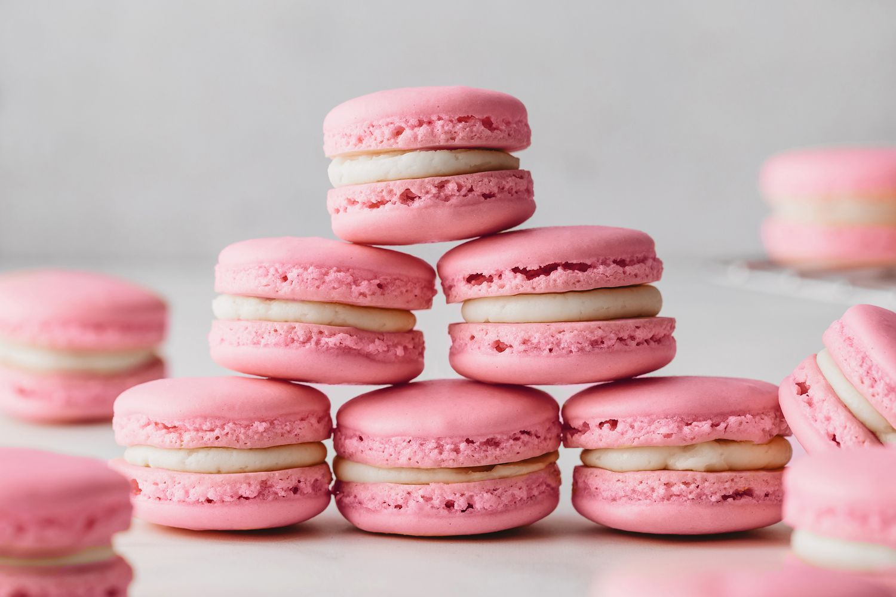

Macarons

Macarons... You know the drill. Eat at least 10 because they're light, right?
The scale tells the truth, you can't avoid it. Anyway, let's ignore the red flags and start producing little kilo bombs!
They shouldn't be hard, they only need care and almost equal distribution on the tray, via the piping bag.
Ingredients
For The Macarons
- 210g Powdered Sugar
- 95g Almond Flour
- 1tsp Salt
- 3 Egg Whites, room temperature
- 50g White Sugar
- ½ Vanilla Extract
- 2 Drops Pink Food Coloring
For Vanilla Buttercream
- 230g Unsalted Butter
- 360g Powdered Sugar
- 1tsp Vanilla Extract
- 3tbsp Heavy Cream
Instructions
For The Macarons
- In the bowl of a food processor, combine the powdered sugar, almond flour, and ½ teaspoon of salt, and process on low speed, until extra fine. Sift the almond flour mixture through a fine-mesh sieve into a large bowl.
- In a separate large bowl, beat the egg whites and the remaining ½ teaspoon of salt with an electric hand mixer until soft peaks form. Gradually add the granulated sugar until fully incorporated. Continue to beat until stiff peaks form (you should be able to turn the bowl upside down without anything falling out).
- Add the vanilla and beat until incorporated. Add the food coloring and beat until just combined.
- Add about ⅓ of the sifted almond flour mixture at a time to the beaten egg whites and use a spatula to gently fold until combined. After the last addition of almond flour, continue to fold slowly until the batter falls into ribbons and you can make a figure 8 while holding the spatula up.
- Transfer the macaron batter into a piping bag fitted with a round tip.
- Place 4 dots of the batter in each corner of a rimmed baking sheet, and place a piece of parchment paper over it, using the batter to help adhere the parchment to the baking sheet.
- Pipe the macarons onto the parchment paper in 1½-inch (3-cm) circles, spacing at least 1-inch (2-cm) apart.
- Tap the baking sheet on a flat surface 5 times to release any air bubbles.
- Let the macarons sit at room temperature for 30 minutes to 1 hour, until dry to the touch.
- Preheat the oven to 300˚F (150˚C).
- Bake the macarons for 17 minutes, until the feet are well-risen and the macarons don’t stick to the parchment paper.
- Transfer the macarons to a wire rack to cool completely before filling.
For The Buttercream
- In a large bowl, add the butter and beat with a mixer for 1 minute until light and fluffy. Sift in the powdered sugar and beat until fully incorporated. Add the vanilla and beat to combine. Add the cream, 1 tablespoon at a time, and beat to combine, until desired consistency is reached.In a large bowl, add the butter and beat with a mixer for 1 minute until light and fluffy. Sift in the powdered sugar and beat until fully incorporated. Add the vanilla and beat to combine. Add the cream, 1 tablespoon at a time, and beat to combine, until desired consistency is reached.
- Transfer the buttercream to a piping bag fitted with a round tip.
- Add a dollop of buttercream to one macaron shell. Top it with another macaron shell to create a sandwich. Repeat with remaining macaron shells and buttercream.
- Place in an airtight container for 24 hours to “bloom”.
Check out other recipes bellow!
Chocolate Chip Cookies
French Toast